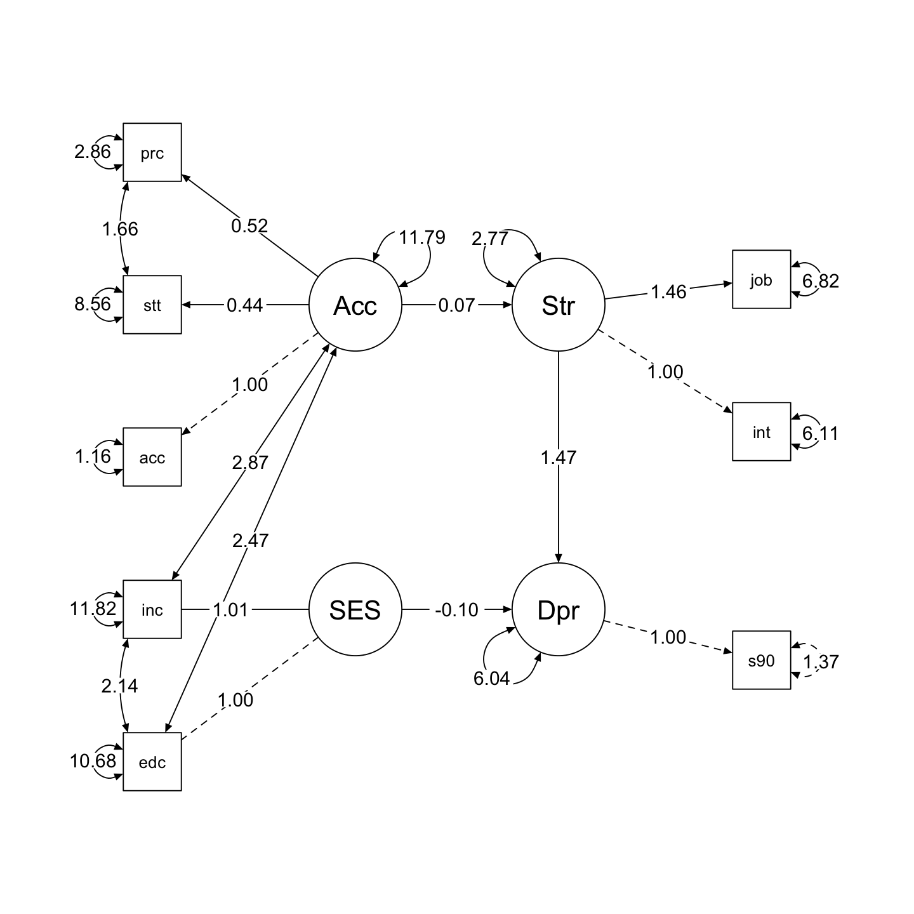
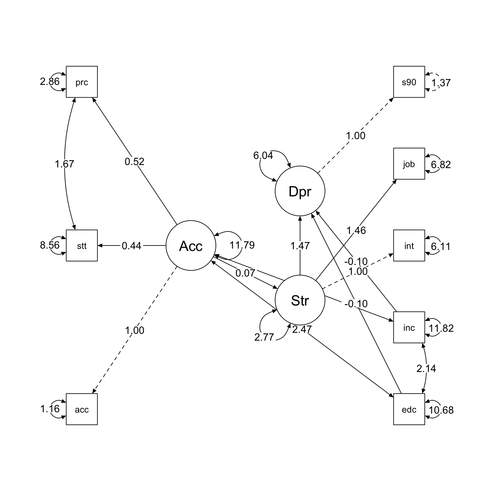

Load libraries
library(psych)
library(tidyverse)
library(lavaan)
library(semTools)
library(manymome)Principles and Practice of Structural Equation Modeling (5e) by Rex B. Kline
library(psych)
library(tidyverse)
library(lavaan)
library(semTools)
library(manymome)FIGURE 16.2. Structural regression models with causal indicators for a latent socioeconomic status composite with a disturbance (a). Zero‐error variance model with composite indicators for an SES composite with no disturbance (b). A partially reduced form model with no SES composite (c). Model (a) is not identified, models (b) and (c) are equivalent. (p. 292)
# input the correlations in lower diagnonal form
shenLower.cor <- '
1.00
.44 1.00
.69 .54 1.00
.21 .08 .16 1.00
.23 .15 .19 .19 1.00
.12 .08 .08 .08 -.03 1.00
.09 .06 .04 .01 -.02 .38 1.00
.03 .02 -.02 -.07 -.11 .37 .46 1.00 '
# name the variables and convert to full correlation matrix
shen.cor <- lavaan::getCov(shenLower.cor, names = c("acculscl", "status",
"percent", "educ", "income", "interpers", "job", "scl90d"))
# add the standard deviations and convert to covariances
shen.cov <- cor2cov(shen.cor, sds = c(3.60,3.30,2.45,3.27,3.44,2.99,
3.58,3.70))# display correlations and covariances
shen.cor |> print() acculscl status percent educ income interpers job scl90d
acculscl 1.00 0.44 0.69 0.21 0.23 0.12 0.09 0.03
status 0.44 1.00 0.54 0.08 0.15 0.08 0.06 0.02
percent 0.69 0.54 1.00 0.16 0.19 0.08 0.04 -0.02
educ 0.21 0.08 0.16 1.00 0.19 0.08 0.01 -0.07
income 0.23 0.15 0.19 0.19 1.00 -0.03 -0.02 -0.11
interpers 0.12 0.08 0.08 0.08 -0.03 1.00 0.38 0.37
job 0.09 0.06 0.04 0.01 -0.02 0.38 1.00 0.46
scl90d 0.03 0.02 -0.02 -0.07 -0.11 0.37 0.46 1.00shen.cov |> round(2) |> print() acculscl status percent educ income interpers job scl90d
acculscl 12.96 5.23 6.09 2.47 2.85 1.29 1.16 0.40
status 5.23 10.89 4.37 0.86 1.70 0.79 0.71 0.24
percent 6.09 4.37 6.00 1.28 1.60 0.59 0.35 -0.18
educ 2.47 0.86 1.28 10.69 2.14 0.78 0.12 -0.85
income 2.85 1.70 1.60 2.14 11.83 -0.31 -0.25 -1.40
interpers 1.29 0.79 0.59 0.78 -0.31 8.94 4.07 4.09
job 1.16 0.71 0.35 0.12 -0.25 4.07 12.82 6.09
scl90d 0.40 0.24 -0.18 -0.85 -1.40 4.09 6.09 13.69zero error variance model
# ses with composite indicators (educ, income)
# educ, income each covary with acculturation factor
# special lavaan syntax for composite indicators
# "<~" defines a composite where the disturbance
# variance is automatically fixed to zero
# composite is explicitly scaled with an ULI constraint
shenSEScomposite.model <- '
# ses composite
SES <~ 1*educ + income
# reflective factors
Acculturation =~ acculscl + status + percent
status ~~ percent
Stress =~ interpers + job
Depression =~ scl90d
scl90d ~~ 1.369*scl90d
# covariances among exogenous acculturation factor
# and composite indicators of ses explicitly defined
# as free parameters
Acculturation ~~ income + educ
income ~~ educ
# covariance between ses composite and acculturation
# factor fixed to zero
Acculturation ~~ 0*SES
# structural model
Stress ~ Acculturation
# depression regressed on ses composite and
# reflective stress factor
# coefficient for SES labeled for calculation of
# indirect effects through the SES composite
Depression ~ b*SES + Stress 'partially reduced form model with no SES composite
# specify figure 16.2(c)
# partially reduced form model with
# no SES composite
shenSESnoComposite.model <- "
# reflective factors
Acculturation =~ acculscl + status + percent
status ~~ percent
Stress =~ interpers + job
Depression =~ scl90d
scl90d ~~ 1.369*scl90d
# covariances among exogenous acculturation factor
# and the measured exogenous variables income and education
# explicitly declared as free parameters
Acculturation ~~ income + educ
income ~~ educ
# structural model
Stress ~ Acculturation
# depression regressed on income, educ, and
# reflective stress factor
Depression ~ educ + income + Stress "# fit figure 16.2(b) to data
shenSEScomposite <- lavaan::sem(shenSEScomposite.model, sample.cov = shen.cov,
sample.nobs = 983, fixed.x=FALSE)
# fit figure 16.2(c) to data
shenSESnoComposite <- lavaan::sem(shenSESnoComposite.model, sample.cov = shen.cov, sample.nobs=983, fixed.x = FALSE)which are equivalent
# define fit statistics for later comparison display
fit.stats <- c("chisq", "df", "pvalue", "cfi", "srmr", "rmsea", "rmsea.ci.lower", "rmsea.ci.upper")# figure 16.2(b)
lavaan::fitMeasures(shenSEScomposite, fit.stats) |> print() chisq df pvalue cfi srmr
22.294 15.000 0.100 0.995 0.024
rmsea rmsea.ci.lower rmsea.ci.upper
0.022 0.000 0.040 # figure 16.2(c)
lavaan::fitMeasures(shenSESnoComposite, fit.stats) |> print() chisq df pvalue cfi srmr
22.294 15.000 0.100 0.995 0.024
rmsea rmsea.ci.lower rmsea.ci.upper
0.022 0.000 0.040 which are also equal
# figure 16.2(b)
lavaan::residuals(shenSEScomposite, type = "raw") |> print()
lavaan::residuals(shenSEScomposite, type = "standardized.mplus") |> print()
lavaan::residuals(shenSEScomposite, type = "cor.bollen") |> print()$type
[1] "raw"
$cov
acclsc status percnt intrpr job scl90d educ income
acculscl 0.000
status -0.008 0.000
percent 0.000 0.000 0.000
interpers 0.491 0.434 0.173 0.000
job -0.005 0.192 -0.250 -0.042 0.000
scl90d -0.264 -0.050 -0.523 -0.018 0.105 0.042
educ 0.001 -0.233 0.008 0.614 -0.127 0.129 0.000
income -0.026 0.427 0.119 -0.503 -0.530 -0.343 0.000 0.000
$type
[1] "standardized.mplus"
$cov
acclsc status percnt intrpr job scl90d educ income
acculscl 0.000
status -3.815 0.000
percent 0.144 0.000 0.000
interpers 1.975 1.473 0.887 0.000
job -0.024 0.564 -1.198 -1.896 0.000
scl90d -1.123 -0.142 -2.354 -0.303 1.424 0.567
educ 0.042 -0.838 0.062 1.999 -0.349 0.687 0.000
income -1.255 1.477 1.008 -1.565 -1.391 -1.724 0.000 0.000
$type
[1] "cor.bollen"
$cov
acclsc status percnt intrpr job scl90d educ income
acculscl 0.000
status -0.001 0.000
percent 0.000 0.000 0.000
interpers 0.046 0.044 0.024 0.000
job 0.000 0.016 -0.029 -0.004 0.000
scl90d -0.020 -0.004 -0.058 -0.002 0.007 0.000
educ 0.000 -0.022 0.001 0.063 -0.011 0.011 0.000
income -0.002 0.038 0.014 -0.049 -0.043 -0.027 0.000 0.000
# figure 16.2(c)
lavaan::residuals(shenSESnoComposite, type = "raw") |> print()
lavaan::residuals(shenSESnoComposite, type = "standardized.mplus") |> print()
lavaan::residuals(shenSESnoComposite, type = "cor.bollen") |> print()$type
[1] "raw"
$cov
acclsc status percnt intrpr job scl90d educ income
acculscl 0.000
status -0.008 0.000
percent 0.000 0.000 0.000
interpers 0.491 0.434 0.173 0.000
job -0.005 0.192 -0.250 -0.042 0.000
scl90d -0.264 -0.050 -0.523 -0.018 0.105 0.042
educ 0.001 -0.233 0.008 0.614 -0.127 0.129 0.000
income -0.026 0.427 0.119 -0.503 -0.530 -0.343 0.000 0.000
$type
[1] "standardized.mplus"
$cov
acclsc status percnt intrpr job scl90d educ income
acculscl 0.000
status -3.860 0.000
percent 0.144 0.000 0.000
interpers 1.975 1.473 0.887 0.000
job -0.024 0.564 -1.198 -1.897 0.000
scl90d -1.123 -0.142 -2.354 -0.303 1.424 0.567
educ 0.042 -0.838 0.062 1.999 -0.349 0.687 0.000
income -1.255 1.477 1.008 -1.565 -1.391 -1.724 0.000 0.000
$type
[1] "cor.bollen"
$cov
acclsc status percnt intrpr job scl90d educ income
acculscl 0.000
status -0.001 0.000
percent 0.000 0.000 0.000
interpers 0.046 0.044 0.024 0.000
job 0.000 0.016 -0.029 -0.004 0.000
scl90d -0.020 -0.004 -0.058 -0.002 0.007 0.000
educ 0.000 -0.022 0.001 0.063 -0.011 0.011 0.000
income -0.002 0.038 0.014 -0.049 -0.043 -0.027 0.000 0.000
# figure 16.2(b)
lavaan::summary(shenSEScomposite, header = FALSE, fit.measures = FALSE,
standardized = TRUE, rsquare = TRUE) |> print()
Parameter Estimates:
Standard errors Standard
Information Expected
Information saturated (h1) model Structured
Latent Variables:
Estimate Std.Err z-value P(>|z|) Std.lv Std.all
Acculturation =~
acculscl 1.000 3.434 0.954
status 0.444 0.050 8.784 0.000 1.523 0.462
percent 0.516 0.051 10.070 0.000 1.771 0.723
Stress =~
interpers 1.000 1.679 0.562
job 1.456 0.125 11.655 0.000 2.445 0.683
Depression =~
scl90d 1.000 3.502 0.948
Composites:
Estimate Std.Err z-value P(>|z|) Std.lv Std.all
SES <~
educ 1.000 0.192 0.627
income 1.013 0.501 2.023 0.043 0.194 0.669
Regressions:
Estimate Std.Err z-value P(>|z|) Std.lv Std.all
Stress ~
Acculturtn 0.068 0.021 3.241 0.001 0.139 0.139
Depression ~
SES (b) -0.095 0.032 -3.014 0.003 -0.141 -0.141
Stress 1.469 0.126 11.704 0.000 0.704 0.704
Covariances:
Estimate Std.Err z-value P(>|z|) Std.lv Std.all
.status ~~
.percent 1.665 0.307 5.424 0.000 1.665 0.336
Acculturation ~~
income 2.871 0.404 7.101 0.000 0.836 0.243
educ 2.469 0.382 6.455 0.000 0.719 0.220
educ ~~
income 2.135 0.365 5.852 0.000 2.135 0.190
SES ~~
Acculturation 0.000 NaN NaN
Variances:
Estimate Std.Err z-value P(>|z|) Std.lv Std.all
.scl90d 1.369 1.369 0.100
.acculscl 1.157 1.115 1.038 0.299 1.157 0.089
.status 8.559 0.451 18.997 0.000 8.559 0.787
.percent 2.862 0.323 8.856 0.000 2.862 0.477
.interpers 6.112 0.357 17.099 0.000 6.112 0.684
.job 6.823 0.569 11.988 0.000 6.823 0.533
educ 10.682 0.482 22.170 0.000 10.682 1.000
income 11.822 0.533 22.170 0.000 11.822 1.000
SES 0.000 0.000 0.000
Acculturation 11.790 1.256 9.386 0.000 1.000 1.000
.Stress 2.765 0.365 7.574 0.000 0.981 0.981
.Depression 6.036 0.591 10.210 0.000 0.492 0.492
R-Square:
Estimate
scl90d 0.900
acculscl 0.911
status 0.213
percent 0.523
interpers 0.316
job 0.467
Stress 0.019
Depression 0.508
Define a customized plot function using semPlot::semPaths()
semPaths2 <- function(model, what = 'est', layout = "tree2", rotation = 2) {
semPlot::semPaths(model, what = what, edge.label.cex = 1, edge.color = "black", layout = layout, rotation = rotation, weighted = FALSE, asize = 2, label.cex = 1, node.width = 1.2)
}# semPaths2: a customized plot function using semPlot::semPaths()
semPaths2(shenSEScomposite, layout = "tree2", rotation = 2)
# figure 16.2(c)
lavaan::summary(shenSESnoComposite, header = FALSE, fit.measures = FALSE,
standardized = TRUE, rsquare = TRUE) |> print()
Parameter Estimates:
Standard errors Standard
Information Expected
Information saturated (h1) model Structured
Latent Variables:
Estimate Std.Err z-value P(>|z|) Std.lv Std.all
Acculturation =~
acculscl 1.000 3.434 0.954
status 0.444 0.050 8.784 0.000 1.523 0.462
percent 0.516 0.051 10.070 0.000 1.771 0.723
Stress =~
interpers 1.000 1.679 0.562
job 1.456 0.125 11.655 0.000 2.445 0.683
Depression =~
scl90d 1.000 3.502 0.948
Regressions:
Estimate Std.Err z-value P(>|z|) Std.lv Std.all
Stress ~
Acculturation 0.068 0.021 3.241 0.001 0.139 0.139
Depression ~
educ -0.095 0.032 -3.014 0.003 -0.027 -0.089
income -0.096 0.030 -3.209 0.001 -0.027 -0.095
Stress 1.469 0.126 11.704 0.000 0.704 0.704
Covariances:
Estimate Std.Err z-value P(>|z|) Std.lv Std.all
.status ~~
.percent 1.665 0.307 5.424 0.000 1.665 0.336
Acculturation ~~
income 2.871 0.404 7.101 0.000 0.836 0.243
educ 2.469 0.382 6.455 0.000 0.719 0.220
educ ~~
income 2.135 0.365 5.852 0.000 2.135 0.190
Variances:
Estimate Std.Err z-value P(>|z|) Std.lv Std.all
.scl90d 1.369 1.369 0.100
.acculscl 1.157 1.115 1.038 0.299 1.157 0.089
.status 8.559 0.451 18.997 0.000 8.559 0.787
.percent 2.862 0.323 8.856 0.000 2.862 0.477
.interpers 6.112 0.357 17.099 0.000 6.112 0.684
.job 6.823 0.569 11.988 0.000 6.823 0.533
educ 10.682 0.482 22.170 0.000 10.682 1.000
income 11.822 0.533 22.170 0.000 11.822 1.000
Acculturation 11.790 1.256 9.386 0.000 1.000 1.000
.Stress 2.765 0.365 7.574 0.000 0.981 0.981
.Depression 6.036 0.591 10.210 0.000 0.492 0.492
R-Square:
Estimate
scl90d 0.900
acculscl 0.911
status 0.213
percent 0.523
interpers 0.316
job 0.467
Stress 0.019
Depression 0.508
semPaths2(shenSESnoComposite, layout = "tree", rotation = 2)
df1 <- parameterEstimates(shenSEScomposite) |>
mutate(est = est |> round(3)) |>
select(lhs, op, rhs, est)
df2 <- parameterEstimates(shenSESnoComposite) |>
mutate(est = est |> round(3)) |>
select(lhs, op, rhs, est)
# join df1 and df2
full_join(df1, df2, by = c("lhs", "op", "rhs"), suffix = c(".composite", ".noComposite")) |> print() lhs op rhs est.composite est.noComposite
1 SES <~ educ 1.000 NA
2 SES <~ income 1.013 NA
3 Acculturation =~ acculscl 1.000 1.000
4 Acculturation =~ status 0.444 0.444
5 Acculturation =~ percent 0.516 0.516
6 status ~~ percent 1.665 1.665
7 Stress =~ interpers 1.000 1.000
8 Stress =~ job 1.456 1.456
9 Depression =~ scl90d 1.000 1.000
10 scl90d ~~ scl90d 1.369 1.369
11 Acculturation ~~ income 2.871 2.871
12 Acculturation ~~ educ 2.469 2.469
13 educ ~~ income 2.135 2.135
14 SES ~~ Acculturation 0.000 NA
15 Stress ~ Acculturation 0.068 0.068
16 Depression ~ SES -0.095 NA
17 Depression ~ Stress 1.469 1.469
18 acculscl ~~ acculscl 1.157 1.157
19 status ~~ status 8.559 8.559
20 percent ~~ percent 2.862 2.862
21 interpers ~~ interpers 6.112 6.112
22 job ~~ job 6.823 6.823
23 educ ~~ educ 10.682 10.682
24 income ~~ income 11.822 11.822
25 SES ~~ SES 0.000 NA
26 Acculturation ~~ Acculturation 11.790 11.790
27 Stress ~~ Stress 2.765 2.765
28 Depression ~~ Depression 6.036 6.036
29 Depression ~ educ NA -0.095
30 Depression ~ income NA -0.096{kind=link}